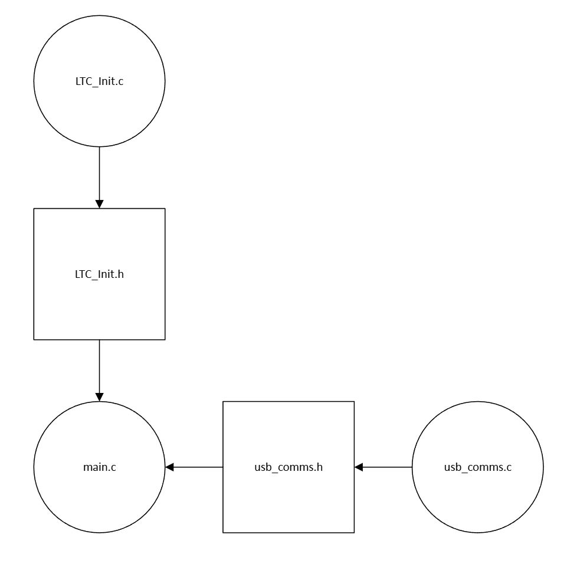

Custom DAQ (In Progress)
Isolated DAQ capable of reading 32 thermocouples simultaneously
This project was handed to me to continue outside of Base Power (and eventually share the final product with them).
I am developing firmware, which I intend on testing once I get a board in hand. I'll be very happy to discuss details
about this project in any interview!
The intent of this project is to develop a DAQ capable of reading 32 thermocouples simultaneously while isolating the thermocouples
into groups to protect against unintentional high-voltage contact.
This project is estimated to cost between $150-200 per board (to be updated once I get a JLCPCB quote, this
estimate is from a BOM cost estimation + ~$50 for soldering), while
the cheapest thermocouple DAQ
I could find
is approximately ~$475, and that too for an 8-channel logger with a 24 hour logging rate at 1 sample per second at most.
Hardware Layout

Hardware Flowchart
The general layout of this DAQ is composed of 4 Thermocouple "banks" containing 8 thermocouples each.
The idea is that if an unprotected thermocouple were to come into contact with a high voltage source,
it would only burn out the "bank" that it was connected to, therefore saving the rest of the board.
Each bank has 8 thermocouples connected to an LTC2986 (with appropriate decoupling capacitors).
The LTC then communicates over SPI to a central STMH723 through an ISO7762 Digital Isolator.
The board itself is a 4-layer board, with internal power and ground planes. The board is composed of 5 regions,
the 4 "banks" and a central region with all necessary hardware for the STM32. Each region maintains a 6mm "gap"
from all other regions to ensure that the isolators (at 1.5kV) are the limiting factor.
The STM Communicates with a PC over a 16-pin standard USB-C Header, which also acts as the power source for
the entire board when it is in operation.
Board
Schematic

PCB
Firmware (In Progress)

Firmware Flowchart
The firmware for this project is actually rather simple, composed of three files.
LTC_init contains the drivers to initialize each LTC module and establishes communication over SPI between
each module and the STM32
(each LTC module is connected to 2 GPIO pins on the STM32 for CS and INT, aside from the standard SPI wires).
Instead of polling each LTC to check whether a conversion cycle is complete, the we wait for all 4 INT pins to
signal completion via the use of a 4-bit mask, and then we pull temperature data from all the LTCs simultaneously.
We then immediately begin the next conversion cycle and repeat the process.
We can run the STM32 at a lower clock speed such as 120MHz so that the heat produced by the chip is minimal.
Even at this speed, the bottleneck in performance will be the LTC's conversion time at around 100ms per Thermocouple.
Once conversions are complete, the temperature data is dumped into a circular buffer which is then exported over UART
to a csv (via a pyserial data logger). The STM's high speed ensures that a large buffer is unnecessary as we can select a
high baud rate to ensure the buffer drains much faster than it is filled.
The main.c file will initialize all necessary parts and contain the primary software loop ensuring the thermocouple to csv
pipeline continues as long as the python file requests data.